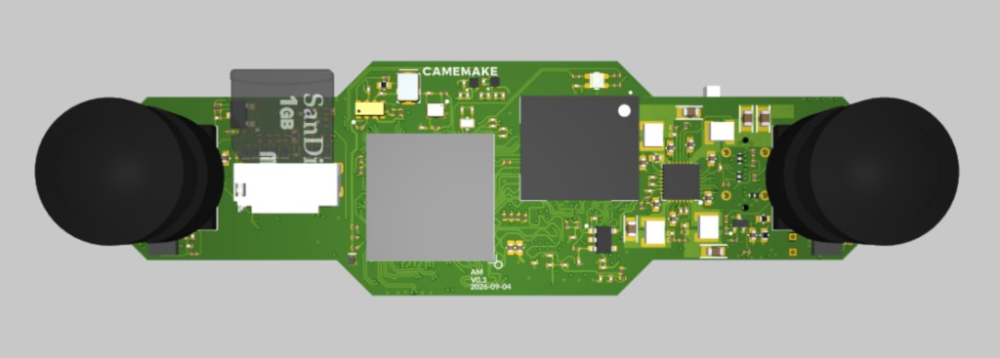
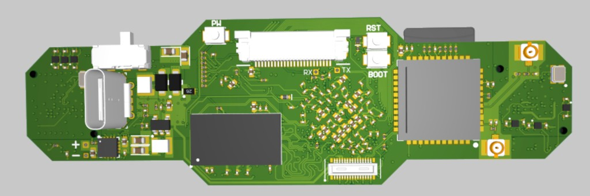

1
Board
- Handle the green outline, not the camera barrels and not the SoC lid.
- Both modules square. Baseline is this PCB.
- Keep the connector side clean. Flux or grease on the via field blocks the pad.
Housing, 75.0 mm baseline, RV1126B thermal path.
The demonstration tool (flash, live page, calibration) is in English.


Thermal path: RV1126B, centre of the camera side. Dual ISP, stereo and NPU. Cameras, eMMC and VS6621 stay clear of that path.
| Zone | On the PCB | In the housing |
|---|---|---|
| SoC lid | Large square, camera side, between the two eyes | Primary cool point. Soft thermal pad or putty onto a metal wall, spreader or small heatsink. |
| SoC via field | Centre of the connector side, under the BGA | Secondary cool point. Isolating gap pad from that copper into the same metal volume. |
| PMIC / power | Dark block left of centre on the connector side | Air or a light pad. Keep USB-C and PH clear. |
| Cameras | Black barrels at each end | Optical keep-out. Support the PCB, never clamp or twist the modules. |
| Wi-Fi / antennas | Right-hand square and gold RF pads | Plastic or air in front of the antennas. Metal here kills range and does not cool the SoC. |
Die operating 35–45 °C. Kernel trip 115 °C (cpu-thermal / soc-crit). Passive sink sized for the top of the band in still 25 °C air. NPU off at the low end.
The metal that holds the cameras is the heat path off the RV1126B.
Passive. Lid pad onto aluminium that can see room air. No fan.
About 2.0 W with dual ISP and stereo, NPU off. About 3.0 W with the NPU on. Room 25 °C. Design die: 42 °C off, 45 °C on. Pad about 1.5 °C/W. Still aluminium in free air about 12 W/m²·K with radiation.
A = Psink / (h · (Tdie − 25 − Psink · 1.5)). About 0.4 W stays in the board, so the sink sees 1.6 W off and 2.6 W on.
| NPU off · 2.0 W | NPU on · 3.0 W | |
|---|---|---|
| Die in still 25 °C air | 35–42 °C | 40–45 °C |
| Air skin on the metal | 100 cm² | 160 cm² |
| Aluminium | 60 g | 100 g |
| Practical part | 50 × 50 mm, 12 mm fins | 60 × 60 mm, 15–18 mm fins, or one 80 × 50 mm housing wall |
Fins count as both faces. A 50 × 50 × 12 mm extrusion is about 100 cm². Pad the block to the RV1126B square. Fins see open air or sit on a thin aluminium housing wall.
At 30 °C room, stay at the top of the 45 °C band or add a few millimetres of fin height.
| Use | Avoid | |
|---|---|---|
| Interface | Soft isolating gap pad or putty on the SoC lid and via field | Bare metal on the via field, liquid metal, hard thermal epoxy that locks the BGA |
| Pressure | Even, light compression from the lid | A point load, a screw through the SoC, or a spring that bends the board |
| Metal | Aluminium pocket or plate over the centre of the board | Metal over the right-hand RF square or in front of the lenses |
| Air | A short chimney past the SoC if the shell is plastic-only | Foam, tape or a logo plate sitting on the RV1126B |
python tools/cv_ego_page.py.| Feature | Why |
|---|---|
| Camera barrels | Optical axis and stereo baseline. A clamp here shifts depth and can crack the module. |
| microSD | Card eject. SoC pad stays off the slot. |
| BOOT / RST / RX / TX | Maskrom and console. |
| PH | Battery lead. Strain-relieve the cable in the shell, not on the connector. |
| Right-hand RF square | Wi-Fi / BT. Metal or a graphite sheet here is an antenna shield, not a cooler. |
| Board flex | The outline is the stereo bar. One screw that twists the PCB is a calibration failure. |
On a board with ADB, the die sensor is the thermal zone:
adb shell cat /sys/class/thermal/thermal_zone0/temp
Millidegrees C. 40000 is 40 °C. Operating 35000–45000. Critical trip 115000 (115 °C). Zone follows cpu-thermal.